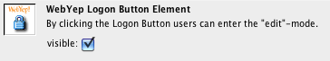

Logon Button

The Logon Button icon in the Dreamweaver object
palette
When a user wants to edit the content of a page, he or she must authenticate with a username and a password: By clicking the WebYep Logon Button, which can be placed anywhere in any page, a popup window containing the logon form opens. After entering the right username/password, that pages appear in edit mode.
This element is represented by the following PHP code:
<?php webyep_logonButton(true); ?> more...
(see "Attributes of the Logon Button" below for details)
- true/false: A boolean – whether the logon button should be visible.
true if it should be visible.
false if not – the button will still be there and clickable (if you know where to click).
Independently of this setting, logging in still requires the correct username and password!
See also Configuring WebYep on how to configure this username and password.

The Logon Button placed at the lower left corner
below the navigation.
The Logon Button does not have to be placed on every editable page. Placing it on one page is enough - after successful logon every editable page will be display in edit mode until the user logs off by clicking the Logon Button again (which will look a bit different when logged in).
This is accomplished by setting some (partially encrypted) Cookies in the users web browser - thus it is necessary to enable Cookies in your web browser to edit the pages content with WebYep.
Technical notice: Username
and password are temporarily stored in Cookies in the users computer
memory, not permanently on the harddisc (Session Cookies)! The password
is stored encrypted in a way that is only valid for one day - so even
if
someone
gets hold
of
the users computer and is able to read out the browsers memory, this
attacker wont know the password and the stolen cookie will not be of
any use the day after the user entered the password.
Nevertheless username and password are transferred unencrypted when logging
in - so if some hacker is able to listen to the users network communication
while logging in, he/she can get hold of the login credentials. The only
way to avoid this, is to use an encrypted HTTP connection (https, SSL).
Attributes of the Logon Button

The Dreamweaver inspector showing the Logon
Button's attributes
visible
If this attribute is deactivated (the checkbox is unchecked), the button will not be displayed as the lock icon, but instead as a fully transparent (thus invisible) image. That way the user can only click it, if she/he knows where it is! Usually you might place it that way right beside or below a logo or other easily locatable elements in a page.
Hiding the Logon Button that way makes logging in a bit like mine detection, but might keep some "curious" website visitors from playing around with the logon window. But if you have configured a save, not easily guessable password, this should not be necessary.